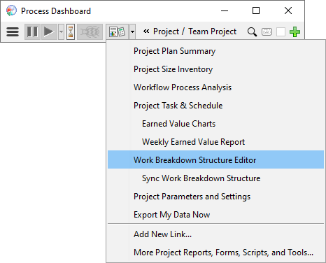

With the team project launch complete, your dashboard will contain a list of project tasks for you to perform. These tasks appear underneath the team project in your dashboard hierarchy.
As you work on the project, your understanding of these tasks will grow, and you may need to alter your original plan. If you discover that a task is much larger or smaller than originally anticipated, you can change the estimate for the task by clicking on the Percent Spent indicator. (This is the blue or red bar that appears to the right of the play/pause button.) You can also edit time estimates by opening your earned value task & schedule plan, and changing the numbers in the PT (Planned Time) column.
Of course, it is also common to discover new tasks that need to be performed and changes to existing tasks. If you just need to create a simple task, you can click the Add Task button on the main dashboard toolbar. If you need to rename a task, move a task, subdivide a task, delete a task, create a component, or use a team workflow, click the script button and choose Work Breakdown Structure Editor.

You can make changes to the tasks in the Work Breakdown Structure, and when you save the changes they will appear in your personal plan.
If your team is using cloud storage for team data, make sure your cloud provider's sync client is running and active. Your WBS changes will not be fully saved until the sync client reports that all files are published and up-to-date.
Some team leaders may choose to lock down the work breakdown structure. In that case, you may be able to look at the Work Breakdown Structure, but will not be able to make changes. If so, you may need to ask your team leader or planning manager to make changes on your behalf.